TR — Turkey
The main impact of a 200 basis-point (2.00 percentage-point) cut in United States interest rates on Turkey is a 0.03% rise in GDP by the ninth quarter — a minimal spillover, consistent with Turkey's rank of tenth by absolute GDP response and its placement in the "minimal" band. This is a small, slow-building, and ultimately self-reversing effect rather than a large hit.
**Demand and trade.** Household consumption (Consumption) edges up to a peak of about 0.01% above baseline around Q9, then rolls over and turns negative by Q16, ending Q20 at roughly −0.01%. Private investment (Investment) responds more sharply, peaking near 0.10% above baseline in Q8 before fading and turning negative by Q13, finishing Q20 at about −0.06%. Net exports (the trade balance) deteriorate through the upswing, reaching a trough of about −0.04% of GDP in Q8, then recover and turn positive by Q19, ending Q20 at roughly +0.01%. Government spending (Gov Spending) dips to about −0.01% around Q9 and then recovers to a small positive by Q20. Government debt (Gov Debt) rises modestly to a peak near 0.01% of GDP around Q13 before easing back toward baseline.
**External / FX.** The real exchange rate (Currency Strength) falls to a trough of about −0.16% in Q8 — that is a real appreciation of the lira, since a decrease in the RER means the home currency is stronger in real terms. This real appreciation is what weighs on the trade balance: net exports deteriorate through the same window, consistent with a stronger lira making Turkish goods relatively less competitive. The RER then reverses, turning positive (a real depreciation) from Q14 onward and ending Q20 near +0.05%.
**Labour.** Employment rises to a peak of about 0.01% above baseline in Q12, then fades and turns negative by Q18, ending Q20 at roughly −0.01%. Unemployment falls to a trough of about −0.01 percentage point in Q11, then rises and turns positive by Q19, ending Q20 at about +0.002 percentage point. Real wages dip to a trough of about −0.02% in Q9, then recover strongly, turning positive by Q14 and ending Q20 at roughly +0.03%.
**Prices.** CPI inflation falls to a trough of about −0.02 percentage point in Q1, fades by Q4, then turns positive from Q9 and ends Q20 slightly negative again; the cumulative CPI effect over Q1–Q12 is about −0.003 percentage point. Domestic inflation (Domestic Infl.) follows a similar pattern, troughing near −0.01 percentage point in Q1 and fading by Q4. Firms' marginal cost (Marginal Cost) rises to a peak of about 0.02% above baseline in Q9, then turns negative by Q16 and ends Q20 at roughly −0.01%.
**Financial conditions.** The local policy rate (Policy Rate) initially falls to about −0.03 percentage point by Q2, then rises to a peak of roughly +0.04 percentage point in Q13 before easing back toward baseline. The 2-year government yield (Govt 2Y Yield) rises to a peak of about +0.03 percentage point in Q10, then falls back and ends Q20 slightly negative. The 5-year yield (Govt 5Y Yield) drifts up modestly early on and then declines to about −0.01 percentage point by Q19. The 10-year yield (Govt 10Y Yield) is nearly flat, ending Q20 at about −0.003 percentage point. Bond prices (Bond Price) rise to a peak of about +0.12% in Q8, then fall and turn negative by Q10, ending Q20 at roughly −0.01%. Equity prices (Equity Index) rise to a peak of about +0.41% in Q8, then fade and turn negative by Q15, ending Q20 at roughly −0.08%. Tobin's Q (the value of installed capital) peaks near +0.07% in Q8, turns negative by Q13, and ends Q20 at about −0.04%. House prices (House Prices) rise steadily to a peak of about +0.03% in Q13 before easing to roughly +0.01% by Q20. Bank credit (Bank Credit) is essentially flat, drifting to about −0.001% by Q20, and lending spreads (Credit Spread) are negligible throughout, ending Q20 at roughly +0.0001 percentage point.
**Sectoral and capital.** Manufacturing GDP rises to a peak of about +0.05% above baseline in Q8, then fades and turns negative by Q14, ending Q20 at roughly −0.02%. Services GDP peaks near +0.02% in Q9, turns negative by Q16, and ends Q20 at about −0.01%. The capital stock (Capital Stock) edges up to a peak of about +0.004% in Q12 and remains slightly positive through Q20.
**Timing.** The GDP response is largest in Q9 at about +0.03% above baseline. It fades by Q15 and turns negative in Q16, ending Q20 at roughly −0.02%. So the initial boost is temporary and largely unwound by the end of the horizon.
**Close.** These are model impulse responses relative to baseline, not forecasts. They describe how Turkey's macro variables deviate from their baseline path after a 200 basis-point cut in US interest rates, with the dominant channels running through equity prices, the real exchange rate, bond prices, and investment.
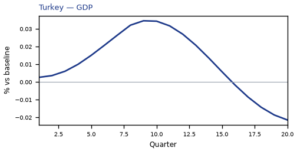
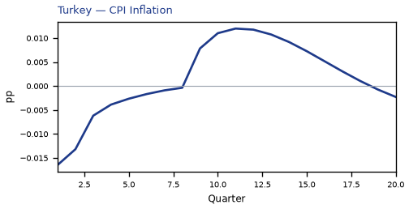
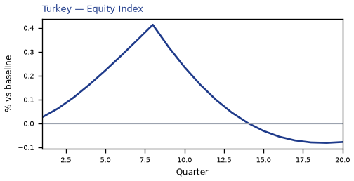
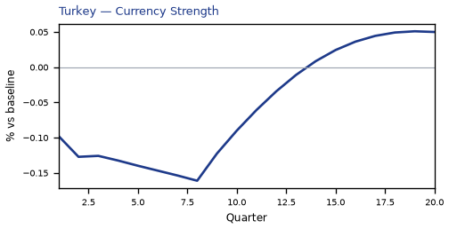
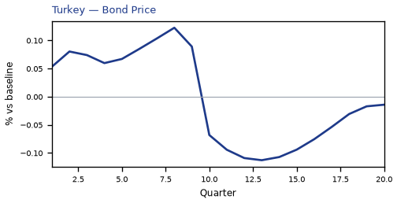
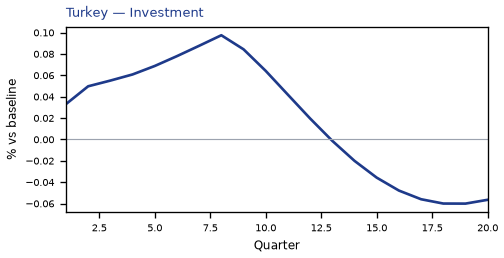
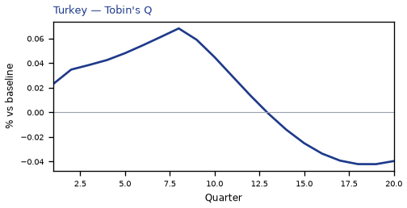
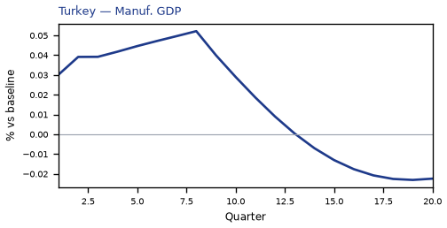
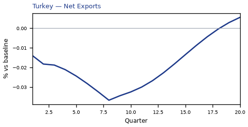

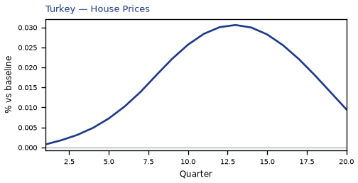
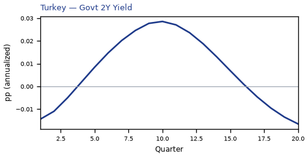
source=live · global_macro_v5 · contract v6 · Q1–Q20 JSON · not financial advice